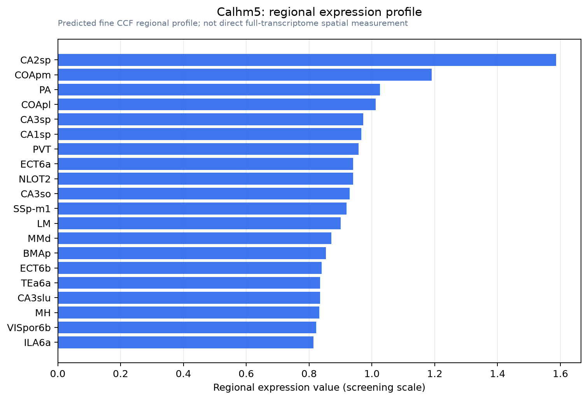

Calhm5
Calcium homeostasis modulator protein 5 (Protein FAM26E)
Spatial tier: REGION_BIASED · Class: ION_CHANNEL · Top region: CA2sp (Field CA2, pyramidal layer) · Positive regions: 31/554
42.4Discovery Score
37.6Targetability Score
CEvidence grade C
What this means: Calhm5: fine CCF profile is region-biased toward CA2sp (top regions: CA2sp, COApm, PA, COApl, CA3sp); this is a discovery lead, not direct proof.
Function in CA2sp: evidence, prediction, innovation
- Gene function
- CALHM5 (FAM26E) belongs to the calcium homeostasis modulator family, which assembles very large-pore oligomeric channels structurally related to connexins and pannexins. CALHM channels conduct ions and release ATP; CALHM1 is the ATP-release channel of taste cells. Bhat et al. 2021 describe human CALHM5 as a large-pore, lipid-gated ATP-permeable channel, and Yang et al. 2026 showed CALHM5 loss alters smooth-muscle calcium handling.
- Region function
- Hippocampal CA2 is a small pyramidal subfield between CA3 and CA1 that receives dense entorhinal layer II and septal/supramammillary input and is required for social recognition memory and for pacing sharp-wave ripples.
- Published in this region
- none No region-specific literature found. The whole PubMed record for Calhm5/FAM26E is four papers (vascular smooth muscle, atherosclerosis, colon cancer, one structural review), none examining brain tissue; the nearest neural link is the CALHM family's established role in ATP release and purinergic signalling.
- Predicted function
- Prediction: in CA2 the likeliest role is an ATP/large-solute release channel in pyramidal neurons or surrounding perineuronal-net astrocytes, feeding P2X/P2Y and adenosine A1 modulation of the plasticity-resistant CA2 synapses. Deleting Calhm5 in CA2 should reduce activity-evoked extracellular ATP, raise the threshold for CA2 disinhibition and weaken social novelty discrimination; non-selective CALHM block should mimic this acutely.
- Innovation
- ★★★★★ 5/5 Only four papers exist on Calhm5 worldwide and none touches brain, while CA2 offers clean behavioural and physiological readouts.
- Tools
- Calhm5-deficient mice reported by Yang et al. 2026; non-selective CALHM blockers (ruthenium red, Gd3+, Zn2+); CALHM5 antibodies from the vascular work; Amigo2-Cre for CA2-restricted deletion. No selective agonist known.
- References
Direct evidence located at the region
No Allen ISH section could be located at this region's centroid for the recorded experiments.
Look it up yourself: Allen Mouse Brain ISH for Calhm5Allen reference atlas: CA2sp (structure 446)ABC Atlas MERFISH viewer(in the ABC Atlas choose dataset MERFISH-C57BL6J-638850-CCF, colour cells by gene "Calhm5" or by parcellation_substructure "CA2sp")All genes confined to CA2sp + 3-D brain
Direct spatial evidence
MERFISH REGION LOCATOR

Regional expression figure

Predicted WMB × fine-CCF profile; not direct full-transcriptome spatial measurement.
Spatial profile
Evidence and specificity
- Evidence status
- PREDICTED_FINE
- Direct sources
- None; predicted localization only
- Exclusive threshold
- 12 positive regions out of 554
- Spatial specificity
- 0.270
- Top-region fraction
- 0.049
- Filter status
- PASS
Interpretation limits
- Cell-type-to-region projection is imputed expression, not direct spatial measurement.
- Adult reference atlases do not establish stability across age, sex, strain, state, or disease.
- Transcript abundance does not guarantee protein abundance or genetic-tool performance.